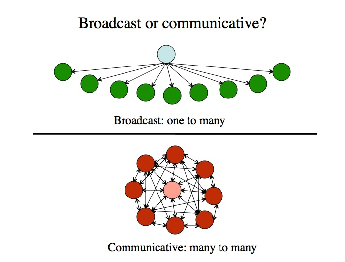
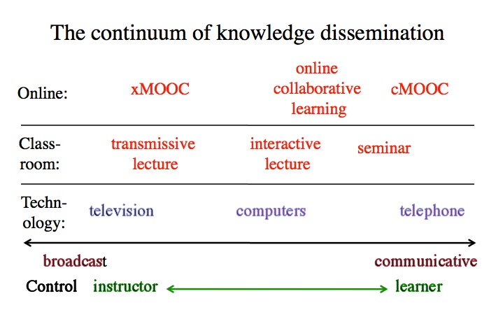

7.5 Mídias de transmissão (broadcast) vs. mídias comunicativas



7.5.1 Características principais das mídias
Ajudará a esclarecer os benefícios ou fraquezas potenciais de cada mídia para a educação se compreendermos as suas características ou affordances. Para o fazer, necessitamos de identificar as características comuns ou distintas das mídias.
Existe uma vasta gama de características ou affordances de mídias que poderíamos analisar, mas focar-me-ei em três que assumem especial relevância para a educação:
- se as mídias são de transmissão/unidirecionais (broadcast) ou comunicativas/bidirecionais (two-way);
- se as mídias são síncronas ou assíncronas, incluindo as transmissões ao vivo (efêmeras) ou gravadas (permanentes);
- se as mídias são únicas ou ricas.
Veremos que estas características constituem mais dimensões contínuas do que estados estanques, e diferentes mídias situar-se-ão em pontos distintos destas dimensões, mas o ponto exato no continuum dependerá, em certa medida, da forma como são planejadas ou utilizadas. Nesta seção, focar-me-ei na dimensão transmissão/comunicativa. As outras duas características serão discutidas nas seções subsequentes.
7.5.2 Mídias de transmissão ou comunicativas
Uma distinção estrutural relevante verifica-se entre as mídias de "transmissão" (broadcast), que são prioritariamente de um-para-muitos e unidirecionais, e as mídias que são essencialmente de muitos-para-muitos ou "comunicativas", permitindo conexões de comunicação bidirecionais ou múltiplas. As mídias comunicativas incluem as que conferem igual "poder" de comunicação a múltiplos usuários finais.
7.5.2.1 Mídias de transmissão (broadcast)
A televisão, o rádio e a imprensa escrita, por exemplo, constituem prioritariamente mídias de transmissão ou unidirecionais, uma vez que os usuários finais ou "receptores" não conseguem alterar a "mensagem" (embora possam interpretá-la de forma diferente ou optar por ignorá-la). Note-se que pouco importa a tecnologia de entrega utilizada para a televisão (transmissão terrestre, satélite, cabo, DVD, internet): ela continua a ser uma mídia de "transmissão" ou unidirecional. Algumas tecnologias da internet são também essencialmente unidirecionais. Por exemplo, o site de uma instituição constitui, essencialmente, uma tecnologia unidirecional.
Uma vantagem das mídias e tecnologias de transmissão reside no fato de garantirem um padrão comum de materiais didáticos para todos os estudantes. Isto revela-se particularmente importante em países onde os professores dispõem de pouca qualificação ou apresentam qualidade variável. Além disso, as mídias de transmissão unidirecionais permitem à organização controlar e gerir a informação transmitida, garantindo o controle de qualidade dos conteúdos. As mídias e tecnologias de transmissão tendem a ser preferidas por quem adota uma abordagem "objetivista" do ensino e da aprendizagem, uma vez que o conhecimento "correto" pode ser transmitido a todos os que recebem a instrução. Uma desvantagem reside no fato de serem necessários recursos adicionais para proporcionar a interação com os professores ou entre os aprendizes.
7.5.2.2 Mídias comunicativas
O telefone, a videoconferência, o e-mail, os fóruns de discussão on-line, a maioria das mídias sociais e a internet constituem exemplos de mídias ou tecnologias comunicativas, na medida em que todos os usuários conseguem comunicar e interagir entre si e, em teoria pelo menos, dispõem de poder equivalente em termos tecnológicos. A importância educativa das mídias comunicativas reside no fato de permitirem a interação entre aprendizes e professores e, talvez de forma ainda mais significativa, entre um aprendiz e outros alunos, sem que os participantes necessitem de estar presentes no mesmo local.
7.5.2.3 Qual é qual?
Esta dimensão não é rígida, com classificações necessariamente claras ou inequívocas. As tecnologias tornam-se cada vez mais complexas e capazes de desempenhar uma vasta gama de funções. Em particular, a internet não constitui tanto uma mídia única, mas sim um referencial de integração para muitas mídias e tecnologias diferentes, com características distintas e frequentemente opostas. Além disso, a maioria das tecnologias apresenta flexibilidade, podendo ser utilizada de formas distintas. No entanto, se forçarmos demasiadamente uma tecnologia, por exemplo, tentando tornar uma mídia de transmissão como um xMOOC mais comunicativa, tendem a surgir tensões. Por isso, considero a dimensão ainda útil, desde que não sejamos dogmáticos sobre as características de mídias ou tecnologias específicas. Isto implica analisar cada caso individualmente.
Assim, vejo um sistema de gestão de aprendizagem (LMS) prioritariamente como uma tecnologia de transmissão ou unidirecional, embora possua funcionalidades como fóruns de discussão que permitem formas de comunicação multidirecional. Contudo, poder-se-ia argumentar que as funções de comunicação num LMS exigem tecnologias adicionais, como um fórum de discussão, que simplesmente se encontram conectadas ou integradas no LMS, o qual constitui essencialmente uma base de dados com uma interface amigável. Veremos que, na prática, temos frequentemente de combinar tecnologias se quisermos dispor de toda a gama de funções exigidas na educação, o que acrescenta custos e complexidade.
Os sites podem variar na sua posição nesta dimensão, em função da sua concepção. Por exemplo, o site de uma companhia aérea, embora sob o controle total da empresa, possui funcionalidades interativas que permitem pesquisar voos, efetuar reservas, marcar lugares e, por conseguinte, embora o utilizador não consiga "comunicar" com o site ou alterá-lo, consegue interagir com ele e, em certa medida, personalizá-lo. No entanto, não se pode alterar a página que exibe as opções de voos. É por esta razão que prefiro falar em dimensões. O site de uma companhia aérea que permite a interação do usuário final constitui menos uma mídia de transmissão. No entanto, também não constitui uma mídia comunicativa "pura". O poder não é equivalente entre a companhia aérea e o cliente, porque a companhia aérea controla o site.
Cumpre também notar que algumas mídias sociais (por exemplo, o YouTube e os blogs) assemelham-se mais a mídias de transmissão do que a mídias comunicativas, ao passo que outras mídias sociais utilizam prioritariamente tecnologias comunicativas com algumas funcionalidades de transmissão (por exemplo, informações pessoais numa página do Facebook). Uma wiki constitui claramente mais uma mídia "comunicativa". Mais uma vez, importa salientar que a intervenção intencional de professores, designers ou usuários de uma tecnologia pode influenciar a posição de algumas tecnologias na dimensão, embora chegue um ponto em que a característica é tão forte que se torna difícil alterá-la significativamente sem introduzir outras tecnologias.
O papel do professor ou instrutor também tende a ser muito diferente consoante se utilizem mídias de transmissão ou comunicativas. Nas mídias de transmissão, o papel do professor é central, na medida em que o conteúdo é escolhido e frequentemente transmitido pelo docente. Os xMOOCs constituem um excelente exemplo. No entanto, nas mídias comunicativas, embora o papel do professor possa continuar a ser central, como na aprendizagem colaborativa on-line ou nos seminários, existem contextos de aprendizagem em que pode não existir um professor "central" identificado, com contribuições provenientes de todos ou de muitos membros da comunidade, como nas comunidades de prática ou nos cMOOCs.
Assim, pode verificar-se que o "poder" constitui um aspecto relevante nesta dimensão. Qual o "poder" que o usuário final ou o estudante detém no controle de uma determinada mídia ou tecnologia? Se analisarmos esta questão sob uma perspectiva histórica, assistimos nos últimos anos a uma grande expansão de tecnologias que conferem cada vez mais poder ao usuário final. A transição para mídias mais comunicativas e o afastamento das mídias de transmissão trazem, assim, implicações profundas para a educação (tal como para a sociedade em geral).
7.5.3 Aplicando a dimensão às mídias educacionais
Podemos também aplicar esta análise a meios de comunicação não tecnológicos, ou "mídias", como o ensino presencial em sala de aula. As aulas expositivas clássicas apresentam características de transmissão, ao passo que um pequeno grupo de seminário apresenta características comunicativas. Na Figura 7.5.3, situei algumas tecnologias comuns, mídias de sala de aula e mídias on-line ao longo do continuum transmissão/comunicativa.



Ao realizar este exercício, é importante notar que:
- não existe um juízo de valor geral ou normativo sobre o continuum. A transmissão (broadcasting) constitui uma excelente forma de fazer chegar a informação de maneira consistente a um grande número de pessoas; a comunicação interativa funciona bem quando todos os membros de um grupo têm algo equivalente a contribuir para o processo de desenvolvimento e disseminação do conhecimento. O julgamento sobre a adequação da mídia ou da tecnologia dependerá amplamente do contexto e, em particular, dos recursos disponíveis e da filosofia geral de ensino a aplicar;
- a posição em que uma determinada mídia ou tecnologia se situa no continuum dependerá, em certa medida, do design, da utilização ou da aplicação real. Por exemplo, se o palestrante fala durante 45 minutos e reserva 10 minutos para debate, uma aula expositiva interativa poderá situar-se mais próxima da transmissão do que se a sessão for estruturada sob a forma de perguntas e respostas;
- situei os "computadores" no meio do continuum. Podem ser utilizados como mídia de transmissão, como na aprendizagem programada, ou podem ser utilizados para apoiar utilizações comunicativas, como debates on-line. A sua posição real no continuum dependerá, por conseguinte, da forma como optamos por utilizar os computadores na educação;
- a decisão importante sob a perspectiva docente consiste em definir o equilíbrio pretendido entre "transmissão" e "discussão" ou comunicação. Esse equilíbrio deve constituir um fator de orientação nas decisões sobre a escolha das tecnologias adequadas;
- o continuum constitui um recurso heurístico para permitir que o professor reflita sobre qual a mídia ou tecnologia mais adequada em cada contexto, e não uma análise definitiva de onde pertencem os diferentes tipos de mídias ou tecnologias educacionais no continuum.
Assim, a posição em que uma mídia ou tecnologia se "encaixa" melhor no continuum transmissão vs. comunicativa constitui um dos fatores a considerar no momento de tomar decisões sobre mídias ou tecnologias para o ensino e a aprendizagem.
Atividade 7.5 Transmissão ou comunicativa?
A partir da lista abaixo:
- um blog;
- aprendizagem colaborativa on-line;
- Twitter;
- mundos virtuais;
- um podcast;
- um livro didático aberto.
1. Determine qual constitui uma mídia e qual uma tecnologia, ou qual poderia ser ambas, e em que condições.
2. Decida, com base na sua experiência, onde cada mídia ou tecnologia deveria ser posicionada na Figura 7.5.3. Justifique a sua escolha por escrito.
3. Quais foram fáceis de categorizar e quais se revelaram difíceis?
4. Quão útil se revela este continuum para tomar decisões sobre qual mídia ou tecnologia utilizar no seu ensino? O que o ajudaria a decidir?
A minha análise pode ser acessada clicando aqui.